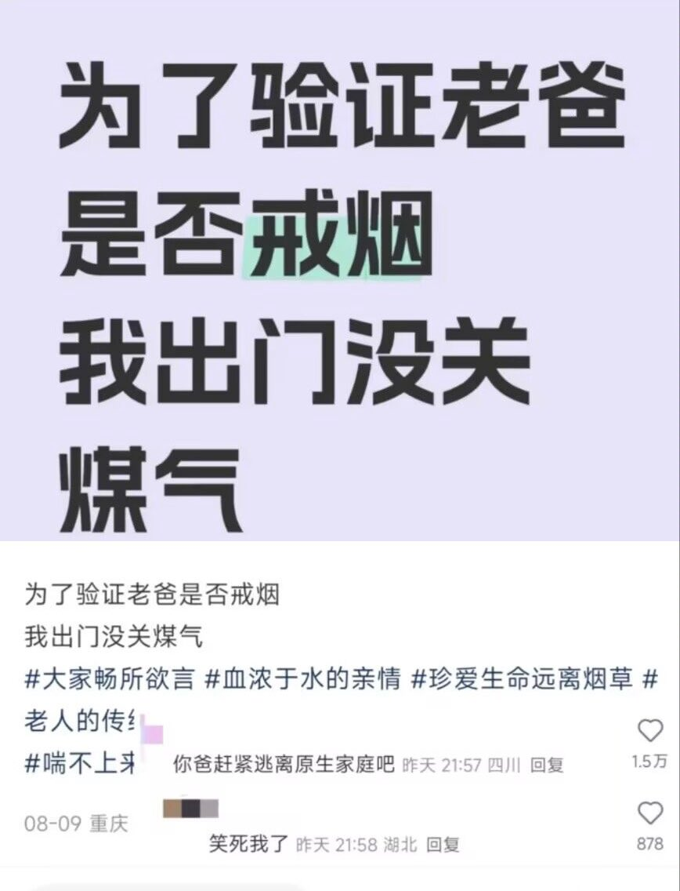

遷鵺_SENNEU
@qianye_zhenyu
@CyberKanjousen 对于很多吐槽自己原生家庭的，说自己没被爱过的就是纯作
见过的很多父母虽然不太懂得教育子女，但也不是说故意让孩子饿着冻着。在大部分父母那个时代能把小孩养大就不错了，而且也不是所有做父母的都清楚该怎么教育人
（纯个人观点）

サイバー環状線
@CyberKanjousen
所以听某些集美抱怨父母这不好那不好，以「生物爹」「生物妈」称呼的时候，環状線都感觉可笑。
不是说牠们的父母就一定称职，但牠们真的把父母当人类看，而不是当 ATM 机兼解压物件看吗？
在環状線看来，除非真的不配为人父母，否则「生物爹妈」这种贬义词汇实在不应扣到父母头上。 https://t.co/UgATCJxXux